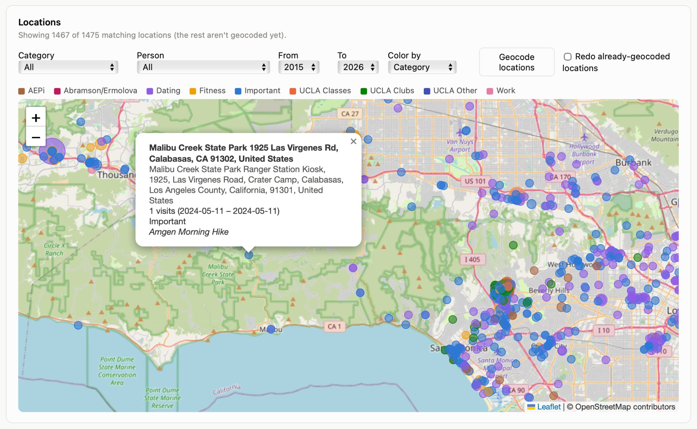
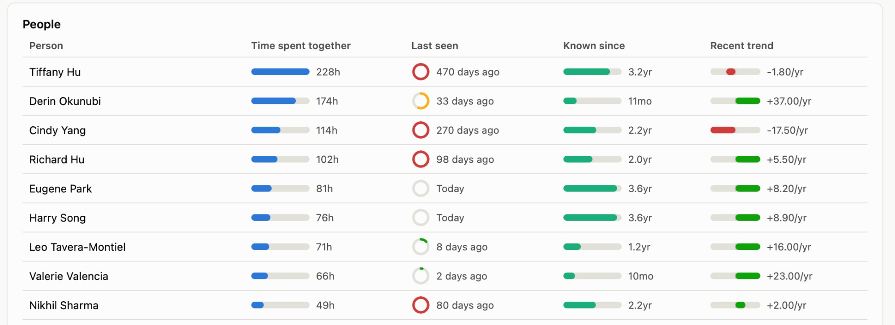
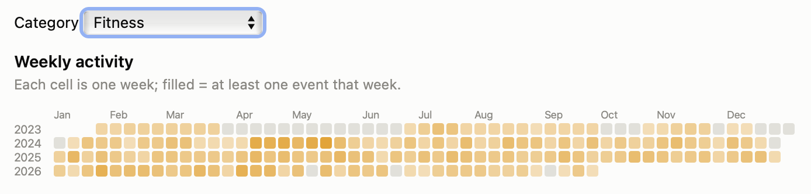

Felinni retroactively mines your own Apple Calendar for patterns: where you've been, who you've spent time with, how consistent your habits are, your travel history, and the weeks that don't look like any other week. Ten years of half-forgotten calendar entries turn into a dashboard you can actually poke at.
The whole thing runs locally. A small Swift/EventKit exporter pulls your events into a JSON file that never leaves your machine, and a Flask dashboard reads that file to build every chart and table.
Every event with a location gets geocoded (OpenStreetMap Nominatim, cached to disk) and dropped on a map, color-coded by category and sized by visit count. Click a pin to see every visit, the date range, and the event titles behind it.

Attendees, a People: note line, or a name buried in the
title all get parsed out and tallied into a sortable table: hours spent
together, days since last seen, how long you've known them, and whether
the relationship is trending up or down recently.

Pick a category and felinni lays out a GitHub-style heatmap of weekly activity going back years, plus streaks, gaps, and auto-detected recurring series flagged as active, slowing down, or stopped relative to their own historical cadence.

Beyond those three, the dashboard has tabs for travel (nearby cities grouped into one metro area, with a neighborhood drill-down for home), time & spend, seasonality, and anomalies — weeks that stand out against your own baseline. It can also pull in a second calendar (Google, Outlook, another Apple account) via a secret ICS link and de-duplicate events that show up in both. Or skip the browser entirely and query from the command line:
python cli.py --events events.json people python cli.py --events events.json habit --category Gym python cli.py --events events.json anomalies
Swift + EventKit for the calendar export, Python + pandas for every
analysis, and Flask + vanilla JS for the dashboard itself. No account,
no server, no data leaving your machine — the exported
events.json is the only thing the tool ever reads.